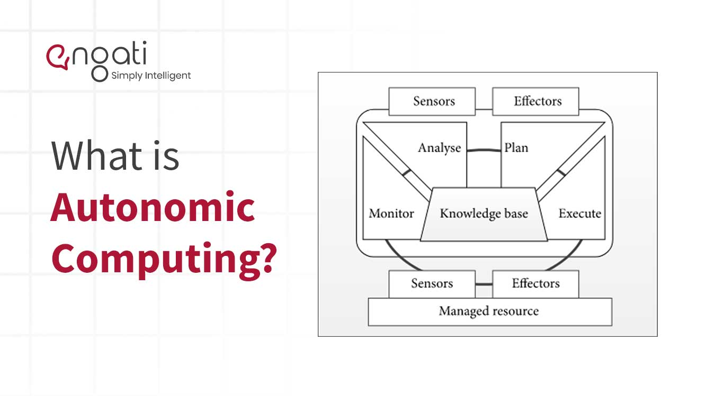

It is a computer’s ability to manage itself automatically through adaptive technologies that further computing capabilities and cut down on the time required by computer professionals to resolve system difficulties and other maintenance such as software updates.

There are four areas or characteristics of Autonomic Computing as defined by IBM. These are as follows:
Self-Configuration.
The system must be able to configure itself automatically according to the changes in its environment. It should be able to add new components, configure its components, get rid of old or faulty components, and reconfigure them by own its own, without needing human interference or intervention (or with very little human assistance).
Self-Healing.
IBM mentions that an autonomic system must have property by which it must be able to repair itself from errors and also route the functions away from trouble whenever they are encountered. It should have the ability to identify faulty components, diagnose them using a corrective mechanism, and heal itself without damaging or harming any other components of the system.
Self-Optimization.
According to IBM an autonomic system must be able to perform in an optimized manner and ensure that it follows an efficient algorithm for all computing operations. This capability is also known as the self adjusting or self tuning property of an autonomous system. Resource utilization and workload management both happen to be aspects of these characteristics.
Self-Protection.
IBM states that an autonomic system must be able to perform detection, identification, and protection from security and system attacks so that systems’ security and integrity remain intact. Autonomic systems have the ability to detect hostile behaviours and then take several types of corrective actions and measures to protect themselves from any sort of attack.
The AC architecture comprises attributes that allow self-management, according to various vendors by involving control loops.
Control loops: A resource provider provides control loops. It is embedded in the runtime environment. It is configured using a manageability interface that is provided for every resource e.g. hard drive.
Managed Elements: The managed element is a component of the controlled system. It can be hardware as well as a software resource. Sensors and effectors are used to control the managed element.
Sensors: This contains information about the state and any changes in the state of elements of the autonomic system.
Effectors: These are commands or application programming interfaces (API) that are used to change the states of an element.
Autonomic Manager: This is used to make sure that the control loops are implemented. This divides the loop into 4 parts for its functioning. These parts are monitor, analyze, plan, and execute.
The key advantage of autonomic computing is decreased Total Cost of Ownership. Breakdowns would be less common with significantly lowering maintenance costs. A very few staff members will be required to operate the networks. The benefit of autonomic computing will be reduced in maintenance cost, deployment, time, and increased stability of IT systems through automation.
Another advantage of this technology is that it provides data consolidation to optimize system capacity and minimizes expense and human activity to maintain massive server farms.
Autonomic computing is widely used in cloud computing environments because it brings self-monitoring, self-repairing, and self-optimizing capabilities that improve the whole performance of the cloud system. Even though autonomic computing can be used in pretty much any environment, it has shown the ability to bring unmatched levels of performance improvement in the cloud environments because of it’s dynamism, scalability, and complex behavior.
The concept of autonomic computing is based on autonomic systems found in nature. Examples of such systems include the autonomic nervous system of humans and the self-regulation of colonial insects such as bees and ants. In an autonomic system, the behaviors of individual components lead to higher-order self-maintenance properties of the group as a whole.